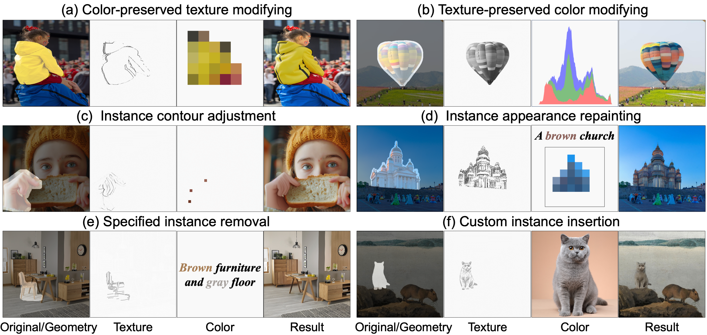

OpenCIR: Conditional Image Repainting with Open Condition Mixture
Shuchen Weng1† Xiaocheng Gong2† Haojie Zheng1,3† Xinlong Wang1 Si Li2‡ Boxin Shi3
1BAAI 2BUPT 3PKU
† Equal contribution ‡ Corresponding author
PaperTeaser

Comparison with State-of-the-Art Methods

BibTeX
@article{opencir,
title={OpenCIR: Conditional Image Repainting with Open Condition Mixture},
author={Weng, Shuchen and Gong, Xiaocheng and Zheng, Haojie and Wang, Xinlong and Li, Si and Shi, Boxin},
journal={IEEE Transactions on Pattern Analysis and Machine Intelligence},
year={2025},
publisher={IEEE}
}